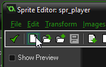
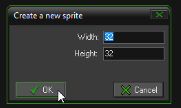

GameMaker in DIDG501
New workshop material appears in the Google Doc first: https://goo.gl/TO6WnS
About GameMaker
We are using GameMaker to make a 2d platform game.
GameMaker is a popular game-making tool for beginners. It's relatively easy to learn, but can take you all the way to making commercially successful games.
- Super Go Down the Hole by Sergio Cornaga
- Narcoleptic Chicken Kid by Lianne Booton
Some commerically successful GameMaker games:
- Gunpoint by Tom Francis – around 700,000 copies sold
- Hotline Miami by Jonatan Söderström and Dennis Wedin – about 2 million copies sold
How to learn GameMaker
1. Watch these tutorial videos:
Gamemaker basics by Shaun Spalding
Platform Game series by Shaun Spalding (this is a series of 12 videos)
2. If you have a question, Google it.
For example:
- gamemaker menu screen
- how to make jump through platforms in gamemaker
- restart current level gamemaker
3. Use the built-in help
In GameMaker, press F1 to open the help. This includes a reference manual which lists every command you can use while coding in GameMaker.
While writing code, If you start typing a command then wait for a moment, GameMaker will display a list of commands you might be typing.
For example, type in 'place' then wait for a second (or press Ctrl) and this will appear:

4. This course!
The classes in this course should be helpful if you are finding it difficult to learn from the resources above.
GameMaker at AUT
This term, we are using GameMaker 1.4.
We are using GameMaker 1.4, which only works on Windows computers.
Due to recent changes, getting GameMaker for free is a little bit tricky. Follow these steps.
(The trick is to install GameMaker 1.3, which comes with a free licence, then upgrade to GameMaker 1.4, which no longer comes with a free licence as of 8th March 2017.)
- Go to http://ccm.net/download/download-23641-gamemaker-studio-standard
- Click the green download button (It says Download Freeware 172.7 MB)
- Wait for the download to finish.
- Run the installer and then start GameMaker Studio 1.3
- Two windows will pop up. One says “A new version of GameMaker-Studio is available”.
- Choose Remind Me Later - we do not want to update to the new version yet!
- The other window has 3 options. Choose the middle option by entering your email address and clicking ‘register’. Follow the process until you are emailed a licence key. Enter this in the box and continue. Then close GameMaker and reopen it.
- GameMaker will ask you t.o update again. Now you have a licence, so it is OK to update to the latest version.
Speed up saving, running and backups
In GameMaker, go to File -> Preferences.
Near the bottom, you will see paths for Temp directory, Asset Cache directory, Backup directory and Home directory. Change all of these to a folder on your computer's desktop.
This will make GameMaker work a lot faster.
GameMaker won't open my game???
It doesn't like reading games straight from a USB drive.
Copy your game folder onto the desktop, then open it from there. When you leave the room, remember to copy it back onto your USB drive.
Workshop Activities
Creating Sprites, Objects and Rooms
You need to be able to do this before you can do any of the other activities.
Start a new project.
Create a sprite:
- Right-click on the Sprites label on the left side of the screen and choose Create Sprite.
- This opens up the Sprite Properties
- Change the name to spr_player
- Click ‘Edit Sprite’ to open the Sprite Editor
- Click on the blank page icon to create a sprite 
- You can accept the default size of 32 x 32 and click 'OK' 
- The Image Editor appears. Use the drawing tools to draw a quick picture, then close the Image Editor and Sprite Editor.
- In the Sprite Properties window, center the sprite by clicking ‘Center’ in the origin box
Create another sprite:
- Follow the same process as above
- Name this sprite spr_wall
- Draw an image of a wall.
- Remember to center it.
Create objects
- Right click on ‘Objects’ in the main window and choose Create Object.
- Name the object obj_player
- Click on ‘<no sprite>’ and change it to spr_player
- Create another object named obj_wall and change its sprite to spr_wall
Create a room
- Create a room by right-clicking on Rooms and choosing Create Room.
- In the Room Editor, you can place objects:
- Clicking on the ‘objects tab’
- clicking in the empty area below the tab and choose what object to place
- Click inside the room to place copies of that object
- Place one obj_player and many obj_walls in your room.
- Close the room editor
Set up Player events
- Set up the obj_player events and actions:
- Select obj_player so the Object Editor appears again.
- Use the button below the Events section to add a Create event.
- On the right hand side, click on the ‘control’ tab - this will show the code blocks.
- Drag the blank white page icon into the Actions box. This is you saying ‘When this object is created, I want some code to be read.’
- A code editor will pop up - you can close it for now.
- Now create another Event: A step event. You will be asked to choose what kind of step, choose the normal step.
- Once again, drag the blank white page icon into the Actions box. This is you saying: ‘On every step of the game, I want some code to be read’.
- A code editor will pop up again - you can close it for now.
- You can bring the code editor back by clicking on the code action. Make sure you choose the right event first! There are two different code sections, one inside the ‘Create’ event and one inside the ‘Step’ event.
The Create event happens once when an object is created. The Step event happens over and over again, usually 30 or 60 times each second.
Coding Basics
A comment
//this does nothing
//lines that start with two slashes are ignored by the computer
//these are called comments and you use them to make helpful notesif-statement
If-statements let you make something only happen in a certain situation. A real life example would be "If I'm hungry, I buy a hamburger."
In the code, the curley brackets {} show what code is connected to the if-statement. All code in the curley brackets will be skipped if the answer to the question is false.
//if the right arrow key is pressed, move 4 pixels to the right
if (keyboard_check(vk_right))
{
x = x + 5
}if-else-statements
Do one thing or do the other thing. You have to do one.
Real life example: if I'm at home, make dinner, otherwise buy a hamburger.
//move fast when hungry, otherwise move slow
if (hungry = 1)
{
x = x + 10
} else
{
x = x + 5
}
}Nested if-statements
Nested means 'one inside another'. A real life example would be:
If I'm hungry, then { if I'm at home, make dinner, otherwise buy a hamburger.}
If you say 'no' to the outer if-statement, then you skip over all the code inside its curely brackets.
//if the right arrow key is pressed, then move. If you are hungry, move fast, otherwise move slow.
if (keyboard_check(vk_right))
{
if (hungry = 1)
{
x = x + 10
} else
{
x = x + 5
}
}Using a variable
//if the right arrow key is pressed, move 4 pixels to the right
key_right = keyboard_check(vk_right)
if (key_right)
{
x += 4
}More variables
//if the right arrow key is pressed, move 4 pixels to the right
movespeed = 4
key_right = keyboard_check(vk_right)
if (key_right)
{
x += movespeed
}Check if a wall is in the way
//gravity: if we can move down 4 pixels without touching an obj_wall, then move down 4 pixels
//note that place_meeting tells us if we would be touching overlapping an object if we moved to a certain place
if (!place_meeting(x,y+4,obj_wall))
{
y += 4
}Player movement, gravity and jumping
This is a slightly simplified version of the code in Shaun Spalding's tutorial (linked at the start of this document). It works the same.
///put this in the player Create event code
yspeed = 0
///put this in the player Step event code
dir = 0
walkspeed = 20
if (keyboard_check(vk_right))
{
dir = 1
}
if (keyboard_check(vk_left))
{
dir = -1
}
//movement code
if (keyboard_check(vk_right) || keyboard_check(vk_left))
{
if (!place_meeting(x + dir * walkspeed, y, obj_wall))
{
x += dir * walkspeed
} else
{
while (!place_meeting(x + dir * 1, y, obj_wall))
{
x += dir * 1
}
}
}
//gravity
yspeed = yspeed + 1
ydir = sign(yspeed)
if (ydir != 0)
{
if (!place_meeting(x, y + yspeed, obj_wall))
{
y += yspeed
} else
{
while (!place_meeting(x, y + ydir, obj_wall))
{
y += ydir
}
yspeed = 0
}
}
//jump
if (keyboard_check(vk_space))
{
if (place_meeting(x, y + 1, obj_wall))
{
yspeed = -20
}
}Simple animations example
You will need to create new sprites for each animation.
To use this code, you need a sprites called spr_player and spr_player_run
A sprite can be a single image, or a series of images (an animation).
//animations (put this in obj_player Step code)
//if left arrow or right arrow is pressed
if (keyboard_check(vk_right) || keyboard_check(vk_left))
{
//do a running animation
sprite_index = spr_player_run //this needs to be the name of a sprite
} else
{
//do a standing animation
sprite_index = spr_player
}
//direction
if (keyboard_check(vk_left))
{
image_xscale = -1 //flip the sprite
} else
{
image_xscale = 1 //do not flip the sprite
}
//To do: if the player is not on the ground, show a falling animation
//To do: if the player is not on the ground
// show a jumping animation if they are falling upwards (yDir is -1)
// else show a falling animation
Simple Main Menu
A menu where players can select different options using the keyboard.
Create a new Object, called obj_menu. Do not give it a sprite.
Create a new Font, called fnt_menu. You do this much like creating Sprites, Objects and Rooms. You can change the font and font size.
Create a new Room, called rm_menu. Reorder it so it is the first room, by dragging it up into the first spot in the list of rooms. GameMaker will start it first when you start your game.
Add one obj_menu object into the room.
Give obj_menu a Create event, a Step (normal step) event and a Draw (Draw GUI) event. Inside each event, add the Code action that we always use.

If you want to draw anything custom on the screen, you need to add a Draw or Draw GUI event. Code inside these events is allowed to draw.
The difference between Draw and Draw GUI is that GUI drawing stays 'stuck' to the camera when the camera moves. For example, if you wanted to draw a health bar in the corner of the screen, use Draw GUI. The normal Draw action draws into the world. For example, if you wanted to show a health bar above an object in the game, you would use Draw and that healthbar would scroll out of view as the object scrolled out of view.
Put this in the Create event
///put this in the menu Create event
menu[0] = "Start"
menu[1] = "Options"
menu[2] = "Quit"
mpos = 0 //which option is selected
Put this in the Step event
//arrow keys move through the menu
if (keyboard_check_pressed(vk_down))
{
mpos = mpos + 1
}
if (keyboard_check_pressed(vk_up))
{
mpos = mpos - 1
}
//wrap around if we go off the end
if (mpos < 0)
{
mpos = 2
}
if (mpos > 2)
{
mpos = 0
}
//menu actions
if (keyboard_check_pressed(vk_enter))
{
if (mpos = 0) //start
{
room_goto_next()
}
if (mpos = 2) //quit
{
game_end()
}
}
Put this in the Draw event
draw_set_font(fnt_menu)
for (i = 0; i < 3; i++)
{
if (mpos = i)
{
//drawing selected option
draw_set_colour(c_red)
} else
{
//drawing non-selected option
draw_set_colour(c_blue)
}
draw_text(100, 100+i*60,menu[i])
}
Simple Shooting
Making one object create other objects can be used for many purposes besides shooting, but we'll use shooting as it is a classic example.
Create a new sprite, spr_shot to represent a shot (or bullet) and then an object named obj_shot with a Create event and Step (normal) event.
Shot Create action:
dir = 0
Shot Step action:
x = x + dir * 10
The code above lets us change the direction of the shot (left or right) by changing its dir variable to -1 for left or 1 for right.
Add this to obj_player step action:
//shooting
if (keyboard_check(vk_control))
{
shot = instance_create(x,y,obj_shot)
shot.dir = dir
}
The code creates a new obj_shot object, and creates a variable 'shot' we can use to change variables inside the shot.